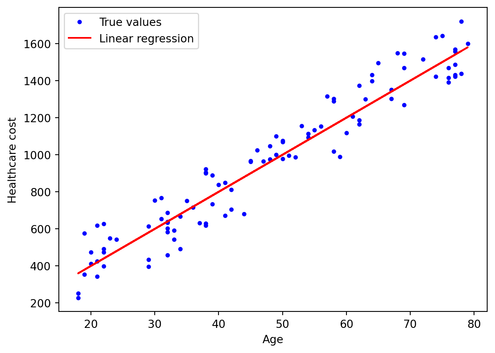
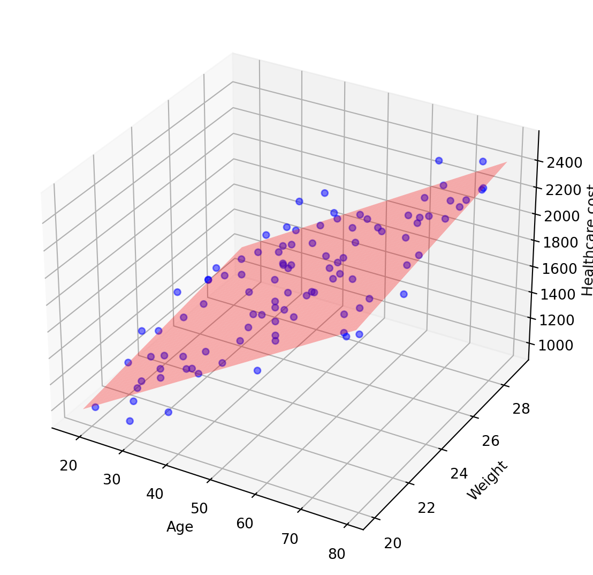
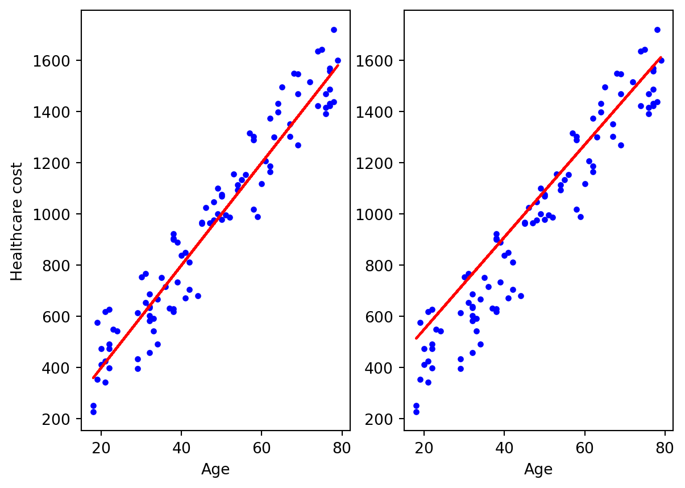
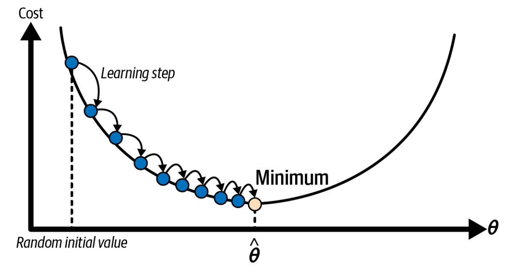
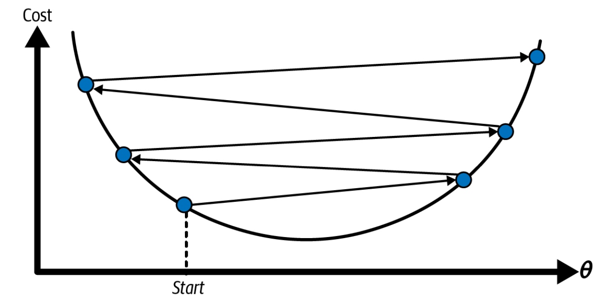
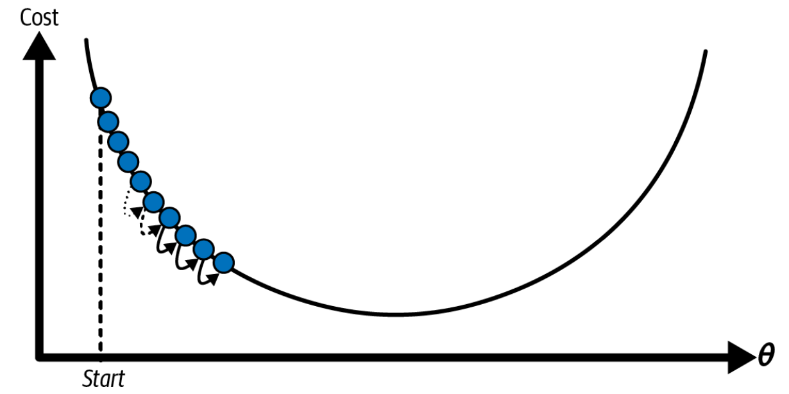
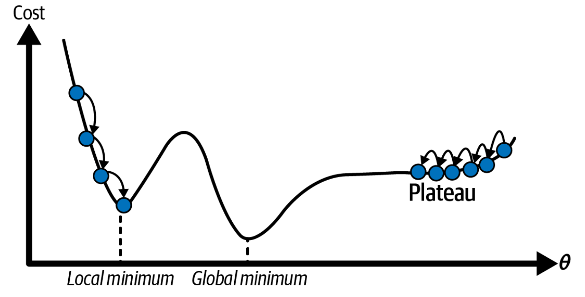
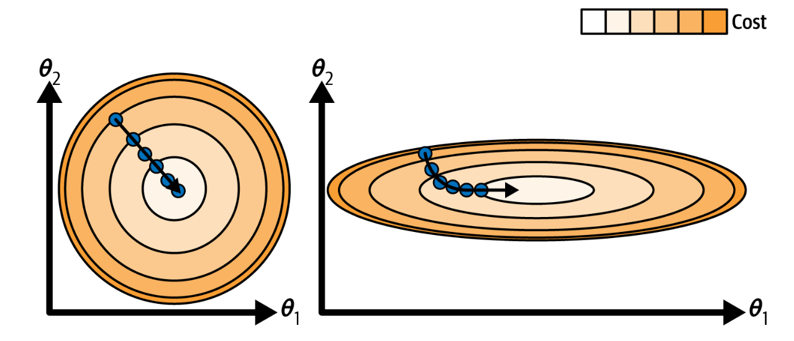
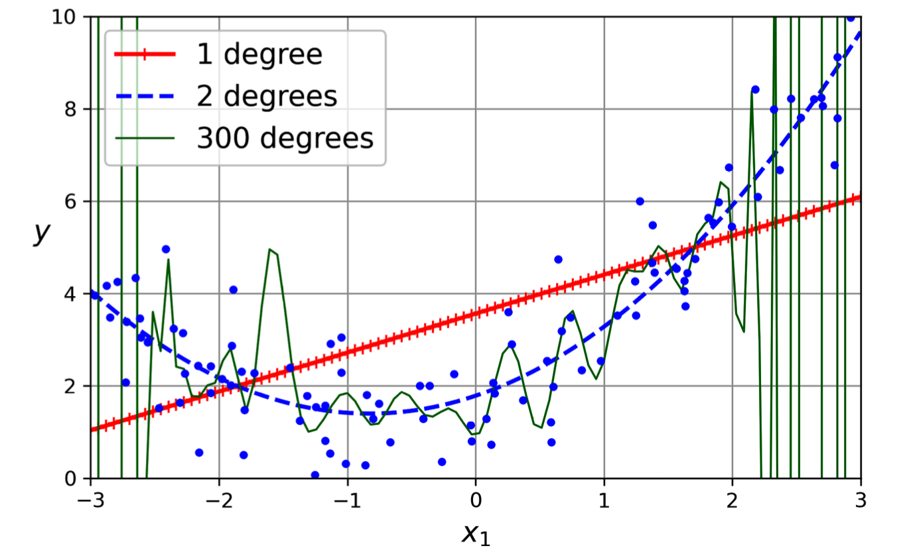

Suppose that we have a data set of demographic and healthcare cost for each individual in a city, and we want to predict the total healthcare cost based on age.
If we use linear regression method for this task, we will assump that the relationship between these features is linear and try to fit a line so that is closest to the data. The plot looks like this.
Code
## Simple linear regression plotimport numpy as npimport matplotlib.pyplot as pltnp.random.seed(29)m =100# number of instancesx = np.random.randint(18,80,m)y = np.random.randint(-200,200,m) +20*xplt.plot(x,y,'b.', label='True values')plt.plot(x, 20*x,'-',color='r', label='Linear regression')plt.xlabel('Age')plt.ylabel('Healthcare cost')plt.legend()plt.show()

If you have another feature using to predict (e.g. weight), the plot will look like this. For ≥3 features, it’s called ‘Multiple linear regression’ and we will fit a hyperplane instead.
Code
## Multiple linear regression plotfrom sklearn.linear_model import LinearRegressionimport pandas as pdfrom mpl_toolkits.mplot3d import Axes3Dimport warningswarnings.filterwarnings("ignore")z = np.random.randint(20,30,m)y = np.random.randint(-200,200,m) +20*x +30*zX_train = np.c_[x,z]lm = LinearRegression()lm.fit(X_train, y)# Setting up the 3D plotfig = plt.figure(figsize=(10, 7))ax = fig.add_subplot(111, projection='3d')# Scatter plot of actual dataax.scatter(x, z, y, color='blue', marker='o', alpha=0.5, label='True values')# Creating a meshgrid for the planex_surf = np.linspace(x.min(), x.max(), 100)z_surf = np.linspace(z.min(), z.max(), 100)x_surf, z_surf = np.meshgrid(x_surf, z_surf)# Predicting the values from the meshed gridvals = pd.DataFrame({'Age': x_surf.ravel(), 'Weight': z_surf.ravel()})y_pred = lm.predict(vals)ax.plot_surface(x_surf, z_surf, y_pred.reshape(x_surf.shape), color='r', alpha=0.3, label='Hyperplane')# Labeling the axesax.set_xlabel('Age')ax.set_ylabel('Weight')ax.set_zlabel('Healthcare cost')#ax.legend()plt.show()

The formula of the line (n=1)/hyperplane (n>1) is: \[
\hat{y} = θ_o +θ_1x_1 +θ_2x_2+...+θ_nx_n
\]
ŷ: predicted value
n: number of features
x_i: the i_th feature value
θ_i: the i_th parameter value (θ_0: intercept; θ_1 - θ_n: weight of parameters)
For linear algebra, this can be written much more concisely using a vectorized form like this: \[\hat{y} = θ.X\]
θ: vecto of weights (of parameters)
X: matrix of features
So how can we find the best fitted line, the left or the right one?
Code
np.random.seed(29)m =100# number of instancesx = np.random.randint(18,80,m)y = np.random.randint(-200,200,m) +20*xplt.subplot(1,2,1)plt.plot(x,y,'b.', label='True values')plt.plot(x, 20*x,'-',color='r')plt.xlabel('Age')plt.ylabel('Healthcare cost')plt.subplot(1,2,2)plt.plot(x,y,'b.', label='True values')plt.plot(x, 10+18*(x+10),'-',color='r')plt.xlabel('Age')plt.show()

It turns out that we have 2 common strategy:
- Linear algebra: using normal equation
- Optimization: using gradient descent
Normal Equation
\[θ = (X^{T}X)^{-1}X^{T}y\]
θ: vecto of weights (of parameters)
X: matrix of features
y: vecto of target value
That’s all we need to compute the best weights (coefficients).
But in reality, not all cases matrix is invertible, so LinearRegression in sklearn compute pseudoinverse (X+) instead, using a standard matrix factorization technique called singular value decomposition (SVD) that decompose X into (UΣV^T): \[
\begin{gather}
θ = X^{+}Y\\
X = UΣV^{T}\\
X^{+} = VΣ^{+}U^{T}
\end{gather}
\]
Both the Normal equation and SVD approach scale well with the number of instances, but scale very badly with number of features. Therefore, we will look at another approach which is better suited for cases where there are a large number of features or too many training instances to fit in memory.
Gradient Descent
How does GD work?
In fact, the computer really like the term ‘optimization’, which means we will take the result roughly equal to the correct one with the acceptable error. Gradient descent (GD) is that kind of method.
Generally, GD tweaks the weights iteratively in order to minimize a cost function. Steps to do Gradient Descent:
Take Gradient (derivative) of Loss Function
Random initialization (take random weights)
Loop step 3-5 until converge:
partial_fit(): ignore (max_iter, tol) do not reset epoch counter
fit(warm_start = True)
Loss function: also called cost function, is the amount that we have to pay if we use the specific set of weights. Of course we want to minimize it cause everyone want to pay less but gain more, right 😆
Learning rate: the pace of changing the weights in respond to the estimated loss
Too small: take a long time to converge
Too high: diverge
Number of epochs: times that we update our weights
Too low: can’t get optimal solution
Too high: waste time (parameters do not change much)
Solution: set large epoch and a tolerance to interrupt when grandient < tolerance

Suitable learning rate

Too low learning rate

Too high learning rate
Figure 1: Learning rate strategy
GD pitfalls
Local minimum: If we initialize weights from the left, we will reach local minimum instead of global minimum
Plateau: if we initialize weights from the right, the gradient will change slowly and adding new instances to the training set doesn’t make the average error much better or worse. If early stopping, we will never reach the global minimum

Figure 2: Gradient descent pitfalls
Fortunately, the cost function of linear regression is a convex function, which means it has no local minimum/ just one global minimum, and its slope never changes abruptly
Another pitfall of GD: features have very different scales. Therefore, when using gradient descent, you should ensure that all features have a similar scale (e.g., using Scikit-Learn’s StandardScaler class), or else it will take much longer to converge.

Figure 3: Gradient descent with (left) and without (right) feature scaling
If the data is more complex (non linear), what do we do? In that case, we just create new features by adding powers to existed features, and use them to fit to our linear model. This technique is called polynomial regression.
For example, we will use sklearn’s PolynomialFeatures to transform our data to higher degree, and then fit it to LinearRegression.
If we have n features, d degree: PolynomialFeatures transform into (n+d)! / (n!d!) features
Learning Curve
How complex polynomial should be?
Underfitting (1 dgree): too simple model, can’t capture the pattern of data
Overfitting (300 degrees): too complex model, tend to remember data

Figure 4: Different polynomial degree
How can tell overfitting or underfitting? There are 2 strategies
Cross-validation
- Overfitting: model perform well on train set, generate poorly on validation set
- Underfitting: perform poorly on both train and validation sets
Learning Curve - Plot training errors and validation errors over training set sizes (using cross-validation)
- Overfitting: gap between the curves - Underfitting: Plateau (adding more training samples do not help)
So how do we handle the overfitting/underfitting model?
Overfitting: Change too simpler model, feeding more training data, constrain the weights of unimportant features
Underfitting: Change to more complex algorithm; better features
Bias-Variation Trade-Off
Bias (underfitting): wrong assumptions (e.g. assump linear while quadratic)
Variation (overfitting): remember data (sensitive to variations in data)
=> Trade-Off: Increase model’s complexity will increase variation and decrease bias
Irreducible error: noisiness => clean up data
Regularized Linear Models
As mentioned above, to reduce overfitting we constrain the weights of model. These techniques are called regularization including: Ridge regression, Lasso Regression and Elastic net.
Regularized linear models: Sensitive to the scale
=> StandardScaler before regularize
In almost cases, we should avoid plain Linear regression
Use case of Regularized linear models:
Elastic Net: when there are few useful features, (features > instances, correlated features => Lasso tends to behave erratically)
Lasso: when there are few useful features
Ridge: good for default (a warmstart)
Find out more about RidgeCV, LassoCV and ElasticNetCV
?@fig-l1-l2
Ridge Regression
Add a regularization term (L2 norm) to the MSE cost function of Linear regression in order to keep the weights as small as possible
Add a regularization term (L1 norm) to the MSE cost function of Linear regression, but tend to eliminate weights of least important features
=> Weights is sparse matrix
The L1 regularization is not differentiable at θi = 0, but gradient descent still works if we use a subgradient vector g11 instead when any θi = 0. Learn more about gradient descent for lasso regression
These 2 models are equally, and we have to adjust the alpha as same as ridge regression